DDT 6
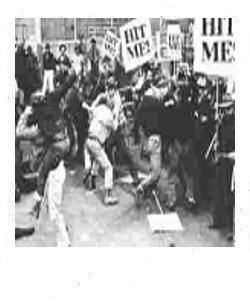
zRebecca
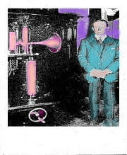
The blue crab has sex with a telephone While an angry window spits screaming eggs Into its pathetic felt hat. A cigarette is shot by accident! The iron deep within a star's center Waits for your caress, weeping Pure Beer. This is a megaphone: Flames purchase an ironic dinner-ape as black marimbas crack Nick Cancer along the smooth legs of an illusion (drumbeatheart).
Yemen, Where the streets swim split delicious up an iron beach of Alleys where old men sweep poet's faces down a burning grate. Arrived south enough to be uncomfortable the crab hot stink clawing our faces as a doorman lets us into the fat-pink foyer, chilled air brought out an invitation: embossed oval, enscripted: Allow The Bearer to an elevator button and press it. It rose to a pause before polished bronze slid back the floor bouncing with herds of miniature zebras and a saturated voice, "WHAT RIOT?!"
It was a tiny man riding a gold jockey cap stuffed with skin in white hair. The toes coated with cherry lacquer. Met Horace that way: Idiot played a piano with a pool cue...just pressed it down on all the keys at once and screamed until someone threw a brick wrapped in tin foil at his spine. Horace would just laugh and say - OH GOD! falling backward onto a small pile of skin. (What chirps that chop? I bop the sheen-bop like snout/chops from Mars, in little cars that egg men on to beat their waves) Blue Cops and patrol-boat painters...cigar band designers, midgets smoking pastels in boxes escort jars of blood. Buy a dog and shoot it in the head with a spear gun you stole in Miami. Albert labors at the wellspring of certainty. The personae join hands: Dance of Death or Paper Cutouts...full of paper flowers and confetti. They make them in order to feed their television families.
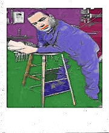
He opened a packet of cigarettes and offered one to the priest who gave him the tape. The latter declined. Later it rained; The Match was postponed until a week from next Saturday. In the interim, Patricia received the results of her catscan and canceled her appointment with the gardener. It grew cloudy that Thursday. Everyone failed to notice that a new mailman had replaced the familiar negro: a very deep, almost blue, color of black.
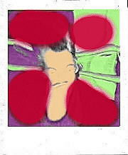
The fog lay beside the still pool, along its reflection. Triangle of pumpkin colored glaze is the sun. She pushes her small pink fingers into the black muck silver. Webs hidden there are too small for the light to catch. Live there cool in dark. One small point against clear blue falls. Wedges into shape calling down steps with silent beats. Faster, it trembles into a feathered wedge of blurs. Faster, it stretches out to hold the blue stillness of the bowl. Dives into the boiling sunlit arc like ripening fruit holds the great knob of light. Faster. Mud is grey now. Like a melted mouse in damps, it straddles finger webs and digs in along the nails. She wiped it into a gathered strand of grass. Pulls it clear and the wet clings in scaled sheen on nails. Faster. fruit ripening in the eye of a feather bouquets falling toward the open mouth. Down faster. Pumpkins. Broth of skin where mud frazzles into feather mouth and pins of dirt open the miniature canyons, here the fog fastens its blue mouth to sleeping bark.
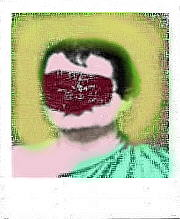
When the monkey god comes down on golden forks, you spread leaves on the road. I heard the music and the ambient stink across your forehead. Eyes as blue as a drowned man's lips. The catalog of desire flips open to the page with your face. This place is chrome-edged, leaps at the
in blue loops and mechanical Arabs. Ice Neon races toward The Machine. Sheer style will trace a needle through the Spaceship's Heart : Power releases Power. Crystal Men, blood filled, Fade behind phantom language: words are plankton, compressed to nothing.
The Fatigued Man spins stiff into his television...Stomping at the iron pedal of Style. Calibrate eye-edges, turn the cool handle if the high edged whine begins to peel away the skin from your ears: place the medal under your tongue and taste the blood enemy. Hold a Bank Note up to the sunlight. "Here"??? This is a ranch where Freud died in the gauze. Spat out his cigar and paint. Only cows came to the bed, gazing with torment. He thought they loved him. He wanted a kiss and a hug. Not too much at once. He was killed by breath coming slower and evolving to glass...like the time he breathed water in his mother's glue pot.
Nine fingers remain. Huddle in gloves. Fumble on bread. The thumb can't chew ice proper without more paper. Eat all the shells, all the sand, all the pictures of pool cues, billiard balls, blue rags, tea bags, empty left-hand gloves. And did you see the Blessed Minds of your Generator crying for a Czar Spangled Fart? Waiting in the sedate divided camps of Illusion and Fantasy? Who was Frog to your Frau? The HOST country holy sandbox blasted by sacred delusion: Three in One: the early trilogy, taught oligarchy, intended contentment, or a better one?
Masonic Rings across the shuddering LAND! Grand Master of the gilded tool, gem entrusted, on Onyx, with Longevity and just This, for all.
The transparent cube is directed at the open space in that wall where the glare of the traffic lights and bird-chirps intersect. The noticeable arc. The cube describes an arc and this is the
Literatura Kamasutra Mississippi Algonquin Saline High Tabula Rasa Kolima Challah Tortumontola Caliphate Malta Templar Alpha Corona Spatula Mal Harvard Tao Tia Hijo Hija Amigo Compolata Indefetaga Ho Malice Chalice Palace Total Ontological Assumption Fallacy Tertiary Saturday Flood Flop Flap Flaw Tassets Talons Gallons Pop Gun Hills Heather Bullock Pin Feather Skullcap Knot Temporary Altar Fart Mammal Pip!
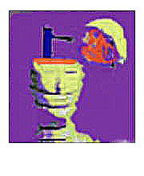
She is all patent leather and candy boxes. Rubs desire against the silky peanut of LUST until it barely explodes. Eats candy in a coma. Wakes inside your mirrors, laughing. Verna made her perverts Swell: told me about Vienna Before World War One:
And if she counted Up all the fingers on Her necklace, all the lips Sewn to make her bedroom slippers: And left the water running Over some silly severed hand "thing". The Old Apple Bombs. Sunning their shanks on the violet-strewn veranda. I ought to know. I ought to know. I ought to eat the compote in the kitchen with dynamite, playing on a bubble-harp. Did you see his collection of calendars nailed to his chest where the Roman Soldier thrust his spear? Freud didn't believe him until he saw the movie on the continent! Small cafes filled with laughing couples.
The smell of urine soaked wallpaper. Small dogs rotting under blood-caked bathtubs challenge the sun, stars, moon, earth and large pelicans! The old wreck Lost on a heap of false arms piled upon a war memorial. Leadership is essential-oil for the machinery of Fear. A wrent in the Sky, Three boiled cabbages, and a fucking dove...Suddenly it's February suddenly Tunnels in exploding shit. Various plastic toys. Burning sweet rolls. Look! The sun rises like a bell in the mouth of a duck....I bought the special buttons, I bought the silver buckle. I will dance on a pile of rubber heads and repeat the oath:
Talent will out. France is an old man picking at the whiteheads on his ass. Burnish the flexed participles of Desire. Empty, it roams lolling awash with metal shavings and lust. Unguentine elephants and the time bugs hover in the underdress of pallid buttocks. Here, as in the past, flings the everlasting Ape Patriot licking Holdover Tiaras....suddenly Springtime in the half-lit village.
Why fight a polaroid of the universe? It's a little spot of reality. Tell me about the blue chrome...about the soft walls of the paper car...about the girl with the knife...Shot through a telescope and thrown through the window of opportunity.
Hydra records the scene (wrapped in tape) crosses the channel to clout against the odor. Oiled, some hinges slip across. Imagine an image of burning bundles. He looked into the heart of mainstream media and yelped like a denture shouting, FEED ME!"And the Masai and Gypsy Pygmies Bubbled out of the foyer With glissando pork chops And a radio playing Japanese fighter pilot:I melted. I twisted them pictures into origami while some little nipper cried "SMILE!" It was all over in a flash...tin twats spinning on the linoleum. But I love the lithography! Fake make shake. Lake the timp...Jake the glimmering tour guide! I flew to pieces in the greasy lake where Lamumba played the numbers and lost...Pygmies mourn the moment, their little tears blam upon the butter. And will this lightbulb ever sing again? In spite of it? When God got drunk, he flew to light and dark and the rest was lost.
The unfurled blankness where God's blanket slipped to the floor. Lost In Wallpaper...I held the blast tapioca Capricorn Embers blessed like a fish sandwich Against Cuba's butterfly machineguns. And when I climbed the stairs Stars burned in my mouth. Marzipan, Halvah, Madhouse! Oh simple thing! Like puffiness Ringing on deserted beachfront cabanas.
Gas marimbas bounce down the Mountaintops...Stars shredding Down in wave-top overcoats...Your rain Your pencilmeat Eyeball Your paraffin dandruff Your envelope of blood. I got a pit bull dog catchermit. I got a lear jet stream. I got a bull fight promoter.
I got Eve's teeth marks at the spot where Adam spat that truth. The snake, curled about her shanks exploded into charming language...bouquets of haiku...and scented her down. And that move: a groove that Alternates currently. Like *coitus* in a moving Zeppelin! Soul is that chemical Derived from buttered Cleavage of An over-powdered Eleanor Roosevelt. I remember! There were two large women, naked, fighting over a mirror. The sky darkened like linoleum or thin Nazi soup drizzled against a picture of Trotsky break-dancing with a miner''s pick in his ear. (Remake the maps of the sewer system of Paris 1892: the holograms lie!)
I took the special cruise tour. Twenty months in a coal bin in Scotland, tied neck to knees with a catheter. Mollusk snapshots. I bopped that FOP and the trick was a blue electric neon Trip Hat linked by genetic overviews of mud larks and daffodils BEYOND spanked tattoos. Right? Urine is Drew Barrymore to elbow's cufflinks.
A hatrack ape ONE row say Jose has ass finder sea capes and an ache INC. too. Snug as a lug wrench drenched in pox hammers: boxed-out. I spun toward the wooden rat decoy like a springy malacia cane, boys! When the bearers came up with gin tonics and hamburgers, I had cornered ratty in the bog and was peppering him with my pepper-gun. The rest you know...I went fishing for fine French finish. Found four fingers on a corner with charred brick under a submarine. Al glided by half drunk and burst into dog shit.
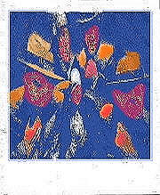
High Brothers cop beer...waffles HORSEY INDIA with her plays: the skin creeps on jelly-rolls And clamps the red train In dark tissue: Oh Baby...oh Exploding Like a crossroad corpse, it shrivels Against the apocalypse of thrills. I saw that polaroid...touched up with Ansco blink-movies. Nice? I'll say. Like a memory you also had: fish glide burning past on Japanese language. Floss on a cross, cruised with whiskey. The snips of plaited vine make the blind see The Bombs running across traffic to eat them. Treat them. Meat beaters with The Telephoto Hendrix mojo of Warsaw 1939 "delight".
COBOL? I ate the solid language of binary traffic In the dark-dark. The disk moves sealed, hard: grunts like a clam. Thank You Jesus For This Plan.
Guttama was a lot like Charlie Parker: picked at facial scabs while listening to the music of the rain....would, for no reason at all, drink the urine of condemned criminals..his quaint demands.
Flails trail after him: the laughter falters as an Irishman cracks chamber pots over the bronze hydrant! A truck filled with ostrich eggs collides with a wall of inflatable women: red smoke.
At the dinner party, uncle Adolf stabs at shrimp with his thumbs. He removes his jacket and tie, gets up on his chair and washes his groin with lemon juice. I am as numb. Is it possible? Sure. Anything?
That chubbery slides glissando voiced. In the bunker: spanks mark the child's height. Nature is inches deep along the concrete floor. Helium balloons shaped like famous bones, doll's heads, dental instruments, scraps of high school...A poem explodes slow-motion Like the motion of the ocean Molten floats make Mardi Gras That flows like scented lotion Releasing that emotion With a literary devotion Devolving in spun caution Against that revolution Before loves' solution Bathed in dilute reaction Delivering satisfaction In tableaux of slow-motion Convolutions of the ocean Tossing clumps of sea grass 'Gainst the twisted mat of Sputtering notions.
The severely dressed woman picks up the receiver of a glossy, dark red telephone. "Yes?", there is the sound of a automobile in a crusher. First the windshield explodes, then the flashlight in the glove compartment screams for it's mother. In three minutes there is a greasy cube of metal, glass and tweedy upholstery beside the phone: the woman smooths back the tiny shaved nape of her white neck and rests her elbows on a pair of Polish knees in a hotel in Rabat where he met the older man who smelled like peaches.
The Philosophy Of Work: The world is an ordinary speck, among ordinary specks...make no mistake. The space between is enforced by blue tile and solar wind. Perfection rushes everywhere At Once: Interpretation Art, that is our Art....they sang over the flame...That is our ART! (They hadn't noticed that the rain had stopped)
Floyd baked the hats Ran like a wet lead sinker Against St.Francis' bald dream-spot Flaws in the matrix result in fleshy-feedback Wilted memories fry in no man's land On blazing pucks I saw there like carrots Stuck in Christ's hands and feet by idiots Waiting for The Fourth of July. Schubert wrote a ditty for the Dead Men's Parade, And a monkey skated on an avalanche of Violins and wax ears. After World War One, a bomb cried In the pocket of a burning overcoat Until mama came And fed it with her pelican's blood. Put the LEFT elephants on the left, Put the RIGHT elephants on the right, Odetta. Odetta week.
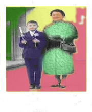
It's a ploy:sub-luminous indoctrination of the right brain. The clouds have been sculpted. We shudder and turn to the steward, softly whispering, "Can I have a raffle?" And in that mustardy wilderness of sauerkraut there rose a shout That spun like sweat that's flung from pocked-marked spangled moats To rise above the cries of flustered, wet-nosed bung-plugger's clout: Within - Without - Within - Without, without, without! Thin blistered, the police.
Wry rocks in carnage ink ply sips and clung apples to blow rigging down on Captain Chops. Among the suet pies, the sweet thin pale Basked belching out The Oath between blood bubbles where the mizzen frisked his liver, Gaul and dark peach. That polaroid of a lesbian: Wrap that penis in brown paper and beat it with the back of your hands.
Cap Badge on that hat is Moldavian Silence, turned up on the other side: stolen by some kefir with the runs.
Science had almost created a perfect Human Being this time. One half of his torso glistened with tiny red crystals. They where hard as diamonds. The other half of his legs had little wheels and places for the rain to run off of him. He didn't have much off a face. "Goddamit, he has no Face!' they screamed and screamed and screamed and screamed. It made no sense! No face to have eyes on? That's right. Where his eyes would be, was just this big round hole with old bobbins and pieces of crushed wood. The deeper you looked the more you would see. Bottles of Tabasco sauce, plastic earrings on dusty paper cards. And that hole in his face was growing. It jumped against the balloon man. He knew the score...another balloon man, another duck. He leapt off the grease and kept his peace with Fr.Francisco, the pud-tugging bugger whose kneecaps looked like twin turtle shells from his pilgrimage to Lourdes-of-The Mind...she said "Whatever..." and was dumb with the multiplication of gloves and microfiches. Suddenly, she burst into clear, sacred sweet silent
Frost was dug up and paraded around town until his bones jangled out of his black death suit (green around the waistcoat) and the head bobbled and fell splat! broke into oversize eggshell finders.
DUCKS...DUCKS....those ducks...I'd reach the teacher with a piano. Played a concerto until my feet were aching in the light of businessmen with butane mothers, we danced along the diamond edges. And inside the muffin, a little paper ranch. Bob opened it slowly, in time to the wombat jumping in a red mesh cage on the sink. When he looked closely, he saw the tiny cross marked "YOU ARE HERE". Almost like being in a glove factory at twilight, and filled with camphor-scented team spirit? You called?
Here, let me show you where the Zulu spear left a scar in the shape of a muskrat wearing a billboard. The Greeks played darts on the deck of the Hindenburg; we juggled railroad flares: accelerator screaming. Meets himself coming the other way..collides with his yesterday: guts unwinding from a hole in their side loop out and suckback in loop in and suck back unwinding from a guts unwinding.
All is forgiven. Allow the music to begin. First a handful of motors pulling at water. First a knitwear display frozen in a block of tears. First a Japanese sword guard with still mountains and rising mist. First, That wasn't my dream....that was my life.
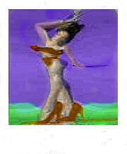
She prunes the apes of reason, turning their wool into sow's ears. One quick look, a pistol shot, a polaroid...The bamboo in a nimbus bent over just enough to allow her soft tattoos to plunder out jig. We went to Rio for the Riots. A city carved from cheese and placed in a cluster of glass grapes. I suspect one of the grapes is full of soft wet words. When the sun sets, it all slides off into a tin can full of gravel. The speckled pudenda, upended by the befriended, who within labored to bend what can be sent to mend the cleansed fender.
I am the Irish Sleeping Tablet. Cleaved by a groove. During the First Polaroid Riots, I had somehow come up with the idea that I could survive the initial debacle by watching vast amounts of television on a portable set installed in a gas station lavatory. It worked...sort of. The bacteria batteries wore down. Night fell against the riverbanks, headbands, Bardic, half-truths, arpeggios, California Racetrack Mink Ranch, today. This prink thaw is a fake lamb all ablaze against the golden burnished Easter Cake Fires.
If I stay up all night eating and letting the music solitaire bounce inside my head, will the streets be calmer? Will I be able to sleep against the clattering of raw daylight that breaks car doors over my head? Beneath this tree, leaves in wind tumble under the seated travelers. The vision is a vision after all: cold blue sky, water, a few clouds moving slowly into the sky. Or bowl implements: giant insect-radios. That crow, a slow implement-taster: made an album and filled it with screaming guppies.
The reliable sun, waiting to explode, grew dense and angry...shooting lewd plumes of fire at the curving time-gaps. Traditional orbits aped the funnel. Debris fell into oceans. On a map of America where the little red lines intersect, singing... It's only a small collection he got from Tenn. Williams. No caps, tho. Little boxing-monks...ladies plaiting the boughs of WILD MEN...barnyard animals in a frosted morality play, singing gold letters. In the middle of that woods, A giraffe with milk-keys eyebrows smoked in the Savoy's Satellite: Undersea mockings embarrassed cigarettes Spared the walking chandelier's Amish mockery. Smote Amish dead making eyebrows spoken sneaks. A monk for your thoughts! spoke Penny the Ape-Girl, already cured like a diabetic ham, beside the pile of chicken parts on the sideboard. Where IS EVERYONE??, he screamed into the radio.
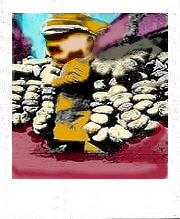
The Battle of Gettysburg was fought on a series of hills, valleys and fields in southern Pennsylvania. When surveying the scene, some twenty years later, a major participant in the battle was suddenly taken with gout and a severe case of Waffens Ardentia Lingus. The rest you already know. The apollo-lipstick moment. Clean - Neat - like a boil sprouting on Krishna's forehead. I tried singing to the cake.
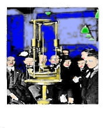
Gary shot the gorilla in the top of its head and flung the pistol in the back seat. Gloria screamed, blood-spattered as a moon-faced Polack slaughterhouse cleanup-man. Larry laughed and lit another Camel. He lit another. Then another. "Yew rilly like those tangs!" she screamed over the sound of the police sirens. "Cops get me edgy, baby.", he said lighting up a crinkled wad of foiled paper from his empty Camel pack. They took the short cut through the rice field. It was chest high in water and the car exploded in steam and stink.
"Help me with this shit!", he screamed as he tried to wrestle the gorilla corpse out the half-flooded door that had let in about 400 pounds of mud into the cherry-apple-red Trans-Am. "Oooh Baby" she cooed. She found him interesting, though a bit unpredictable. That gorilla for instance.....why had Gary shaved it in the first place?? She pulled the pistol out of the muck, shook of a few stinking wads of mud and as she pulled the trigger it exploded in her face tearing off a half-pound of fingers and cheeks.
"Shouldna done that baby...", cooed Barry as he pulled a piece of rouged lip from his left ear and examined it as the cops began to spray the car with the Gatling guns they had so carefully set up in a by-the-book crossfire from their vantage point on the high-ground where the rice paddy rises out of the bugs and water and crests into a gravel mosaic of road-shoulder.
Gary imagined himself lighting a Camel as he pulled the gorilla free from the sinking automobile, taking twelve hits of 45.70 slugs in his thighs as he attempted to ignore the dilemma he had involved the adjoining countryside in. Gloria had run off screaming for 5 yards until the Gatlings had chewed off her legs at the thighs. She began to laugh and scream, "Sylvia Plath!"
Harry was as dead as the gorilla, which had already stopped twitching in his still arms. The police continued to fire as they all had throbbing boners and were determined.
By morning, Sheriff Gimps had arrived and had instructed his men to douse the car and corpses with enough gasoline to render them unidentifiable. He sat in the passenger seat of his black & white as he watched the flames lick at the bubbling clouds. He watched Officer Spew fondle the mud.
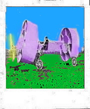
The night
rushing over homes and streets
Passing through the sweet turmoil
Of ecstasy and broken tricks, scattered
In shadowy corners for ballast
Lurching, sleepers pray dumbstruck In the shadowplay, their hearts
Grow lustrous and wink out Along the tangled paths
Death sails the puddled shore Of this thick hour, wading toward
Empty hearts , placing a wadded palm Here...deep within our dreamer's eyes
The moon is a frightened muted grain
Of falling light
Split cold and cupped in darks,
No love slinks in that ghostly gleams...
No death or life or hope rides in its eyes.
He died under a quite soft stagecoach in dumb bullets weight froth at the fuzz muzzle as Gen'l Lee ordered the 15,000 across the Emmetsburg Pike into the Faces of Deaf Dwarfs stuffing iron tubes with canisters of dried carnations to spread over the faces of the Confederate Deaf, roll on great river, bearer of liver and onions and rum punch where the bend-suffused with silage and muck-traps the ship and so Abe drafted his patent and took a bullet in the mind's bustle for his trouble, failed inventor, failed painter at the gates of Stalingrad dreaming of Pelikan Ink and suddenly finding sweet VERTIGO at the end of an ampule of pure death while the Mrs. looked on without a twitch, it was all in one take this time. Actually, the risk is nothing much.
Music and a kiss. Outside, the field rises slowly under the soapy sky. Every time you lift a glass it leaves a ring against the other damp spiral gliss. Every record in the machine sounds good when it just starts - like a movie - spreading out, the excitement can fail. But the risk is everything. Even the ice looks and sounds out of the glass for whoever'd keep their eyes and ears open...Bosnia coughs a bloom of glowing metal anchors to string across the face of Pompeii's favorite sculpture gardens.
The sun and moon are predicted to meet and the needle of darkness sweeps away the birds and curses pull at awnings as disk swipes disk. Here, poverty is a cigarette ash about to fall into the history of rugs. Strobes flicker; the droplet is a crown of thorns for action's hungry baby.